Packshot commercial
Des Fermes, Un Quartier
Photographie commerciale et packshot, pensée pour rendre les produits lisibles, désirables et utilisables dans une logique de communication.
Intention
Des images simples, honnêtes et directement utiles.
Des Fermes, Un Quartier demandait un langage visuel clair: produits, étiquettes, rayonnages et matières devaient rester immédiatement compréhensibles tout en gardant une sensation chaleureuse et désirable.
La page utilise une palette plus terrienne, des panneaux plus chauds et une grille régulière pour évoquer la proximité, l'alimentaire, le bois, les étiquettes manuscrites et la clarté pratique d'une boutique de quartier.
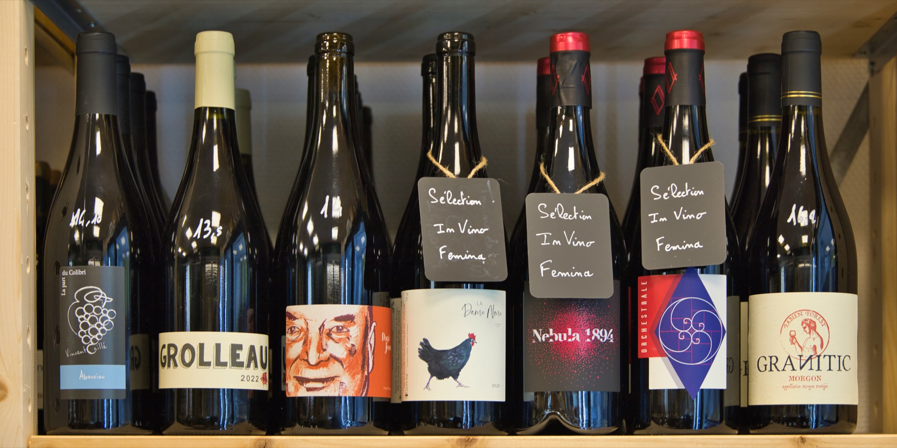
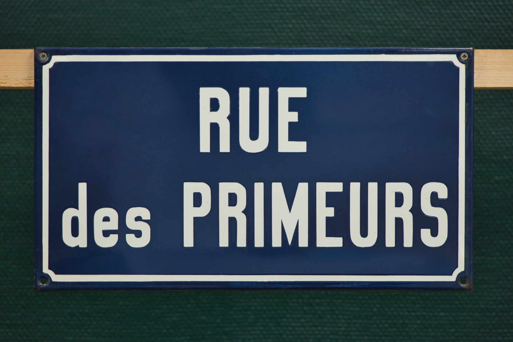
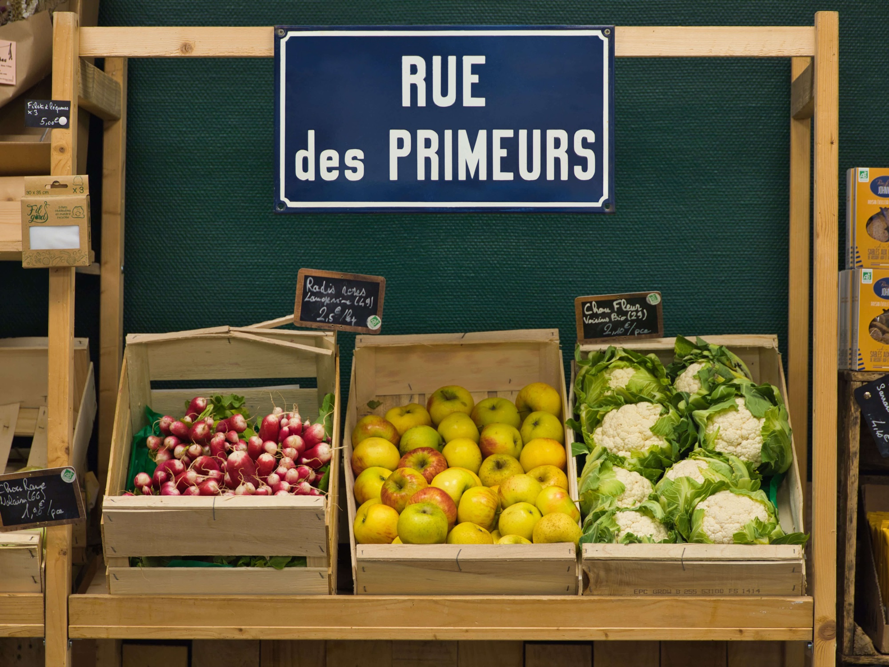
Précision
Rendu clair, frontal et propre pour valoriser le produit.
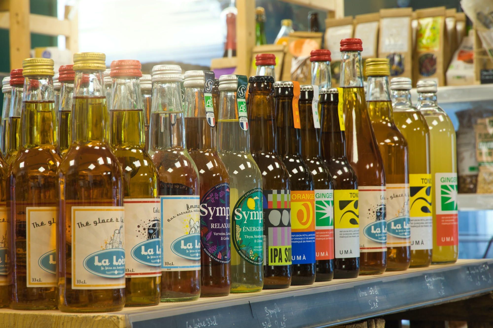
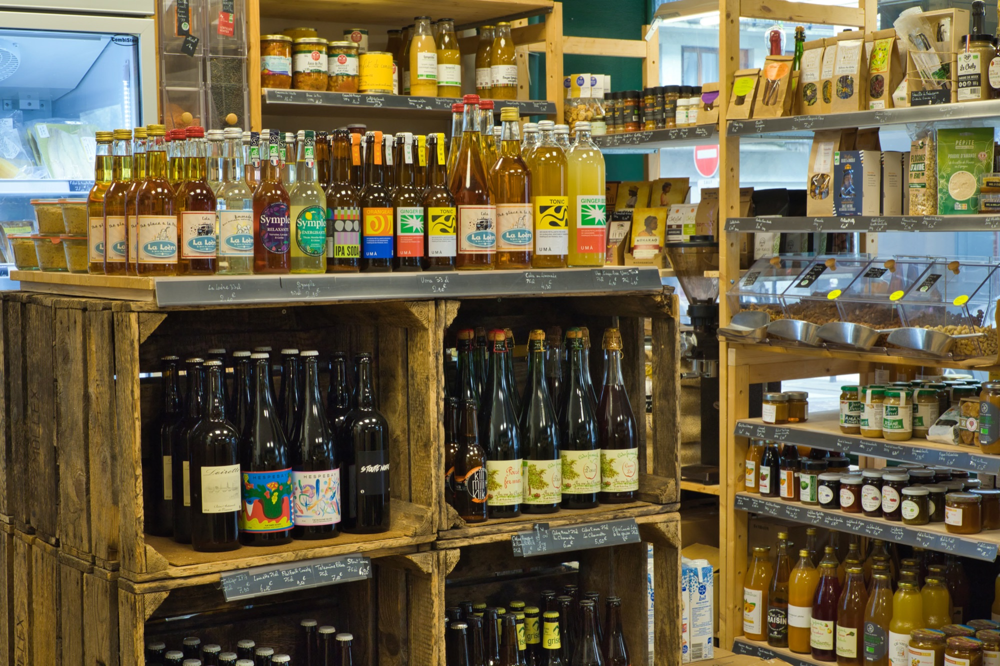
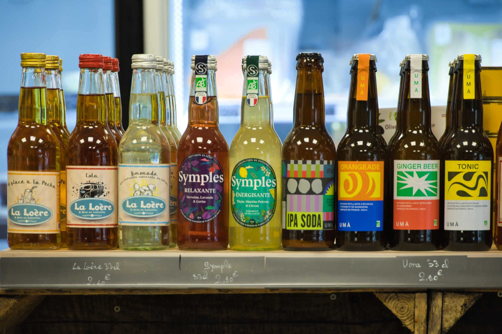
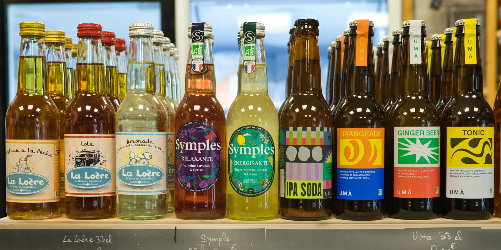
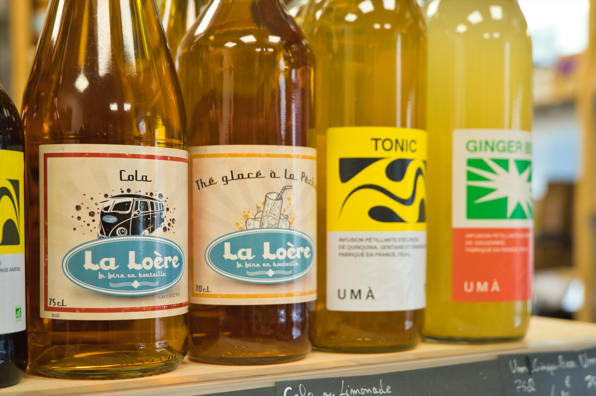
Communication
Images pensées pour servir un usage concret: vente, présentation, supports digitaux.
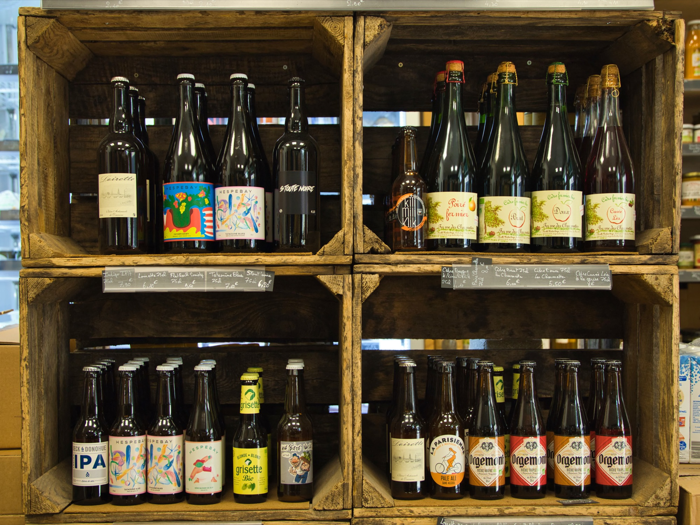
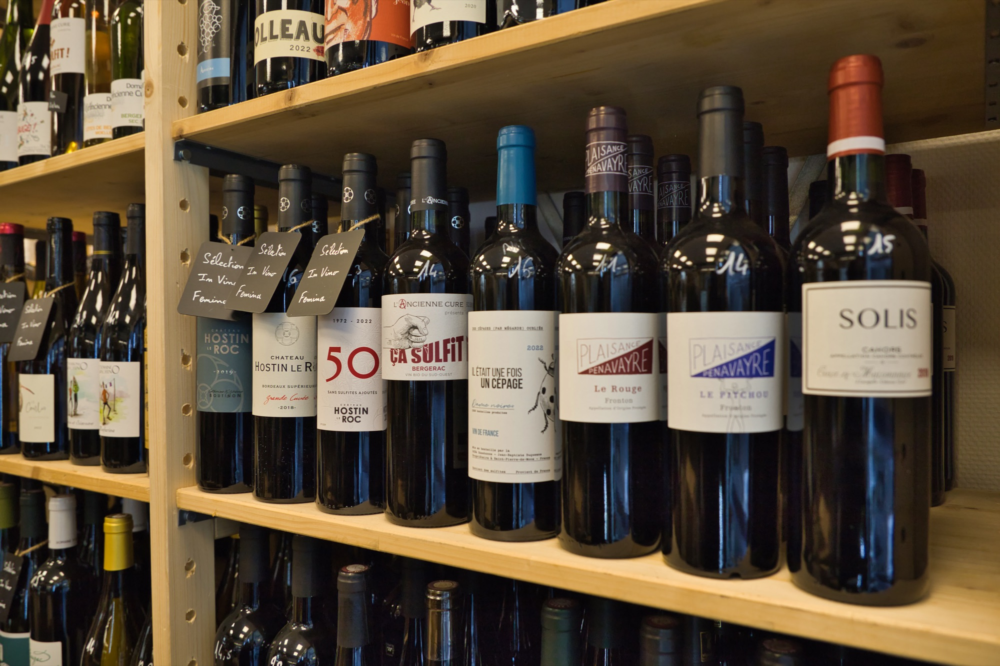
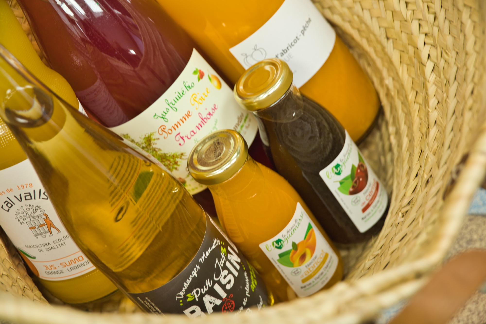
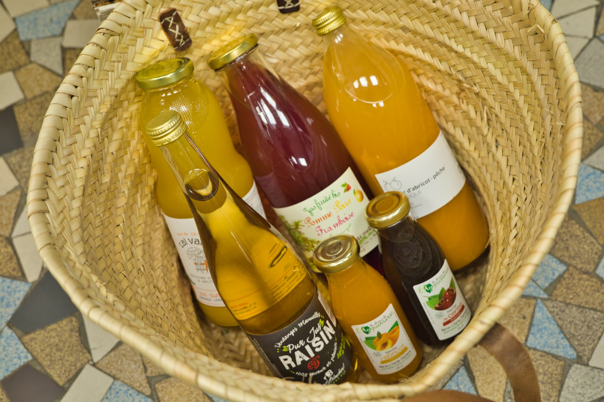